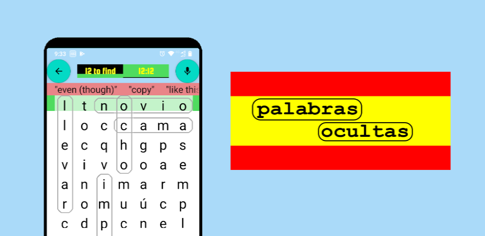

Enhance your Spanish vocabulary with our word search game
Palabras Ocultas (Hidden Words) generates grids of Spanish words for you to search. As well as spelling, words are spoken as you find them (or you can hear the Spanish to help you find the word. You also have the option to try to speak a Spanish word and have the game find it from your pronunciation.